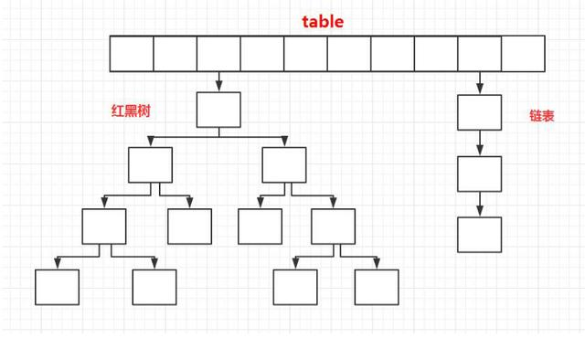
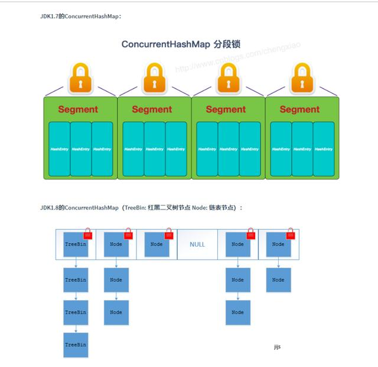

1.1 Arraylist 与 LinkedList 区别
1.2 List中的迭代器
for(Object obj : list){
list.remove(obj)
}注意:
一般list中迭代器不能使用此种方法移除元素,会触发 ConcurrentModifyException,如果要删除可以使用Iterator.remove()
此处如果切换成CopyOnWriteArrayList则可以正常删除1.3 ArrayList的扩容机制
详见:
https://github.com/Snailclimb/JavaGuide/blob/master/docs/java/collection/ArrayList-Grow.md
2.1 Java1.8底层实现
底层=数组+链表(大小超过8,转换为红黑树)
HashMap 通过 key 的 hashCode 经过扰动函数处理过后得到 hash 值，然后通过 (n - 1) & hash 判断当前元素存放的位置（这里的 n 指的是数组的长度），如果当前位置存在元素的话，就判断该元素与要存入的元素的 hash 值以及 key 是否相同，如果相同的话，直接覆盖，不相同就通过拉链法解决冲突。
所谓扰动函数指的就是 HashMap 的 hash 方法。使用 hash 方法也就是扰动函数是为了防止一些实现比较差的 hashCode() 方法,换句话说使用扰动函数之后可以减少碰撞。
//hash方法
static final int hash(Object key) {
int h;
// key.hashCode()：返回散列值也就是hashcode
// ^ ：按位异或
// >>>:无符号右移，忽略符号位，空位都以0补齐
return (key == null) ? 0 : (h = key.hashCode()) ^ (h >>> 16); //扰动函数进行处理
}
2.2 HashMap长度为什么是2的幂次方
一般用hash对map的长度取模使用,当且仅当length是2的幂次方时,hash%length==hash&(length-1)成立,这样的话位与比取模%运算要更快
2.3 HashMap线程不安全问题
HashMap不是线程安全的类,两个线程同时去put可能引起数据不一致,在1.7以前还存在闭链问题,1.8以后解决了这个问题,并发环境下建议使用ConcurrentHashMap;
详情参见：
https://coolshell.cn/articles/9606.html
2.4 HashMap的其他资料
更详细的资料, 请参见:
https://zhuanlan.zhihu.com/p/21673805
2.5 ConcurrentHashMap的基本结构
1.底层数据结构:
JDK1.7的 ConcurrentHashMap 底层采用 分段的数组+链表 实现，JDK1.8 采用的数据结构跟HashMap1.8的结构一样，数组+链表/红黑二叉树。Hashtable 和 JDK1.8 之前的 HashMap 的底层数据结构类似都是采用 数组+链表 的形式，数组是 HashMap 的主体，链表则是主要为了解决哈希冲突而存在的；
2.实现线程安全的方式:
① 在JDK1.7的时候，ConcurrentHashMap（分段锁） 对整个桶数组进行了分割分段(Segment)，每一把锁只锁容器其中一部分数据，多线程访问容器里不同数据段的数据，就不会存在锁竞争，提高并发访问率。 到了 JDK1.8 的时候已经摒弃了Segment的概念，而是直接用 Node 数组+链表+红黑树的数据结构来实现，并发控制使用 synchronized 和 CAS 来操作。（JDK1.6以后 对 synchronized锁做了很多优化） 整个看起来就像是优化过且线程安全的 HashMap，虽然在JDK1.8中还能看到 Segment 的数据结构，但是已经简化了属性，只是为了兼容旧版本；synchronized只锁定当前链表或红黑二叉树的首节点，这样只要hash不冲突，就不会产生并发，效率又提升N倍。

当你把对象加入HashSet时，HashSet会先计算对象的hashcode值来判断对象加入的位置，同时也会与其他加入的对象的hashcode值作比较，如果没有相符的hashcode，HashSet会假设对象没有重复出现。但是如果发现有相同hashcode值的对象，这时会调用equals（）方法来检查hashcode相等的对象是否真的相同。如果两者相同，HashSet就不会让加入操作成功。
最后，感谢你读到了这里。
我最近又整合更新了一些资料，在这里分享给大家！
需要可以加我的架构群领取哦！！！（772300343）
最后，我是小架
我们下篇文章见！